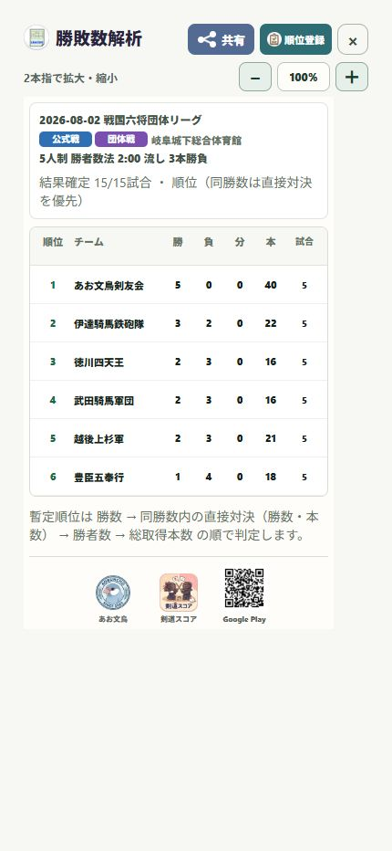

18 / 共有する
リーグ戦の成績を一覧で共有する
リーグ戦の勝ち・負け・引き分けと、本数・順位をまとめて確認します。
操作の入口履歴 → 大会の操作（縦の3点）→ 勝敗数解析
対象の大会を選ぶ
同じ大会として記録したリーグ戦を選び、操作メニューの「勝敗数解析」を開きます。
確定した試合を確認する
「結果確定 ○／○試合」の件数を見ます。試合が抜けていたら先に履歴の内容を確認します。
勝敗と順位を読む
順位、チーム（個人戦は選手）、勝・負・分、本数、試合数を確認します。表の下に順位の判定順が表示されます。
画像で共有する
「共有」からLINEなどを選びます。入賞記録にも残すときは「順位登録」へ進みます。

